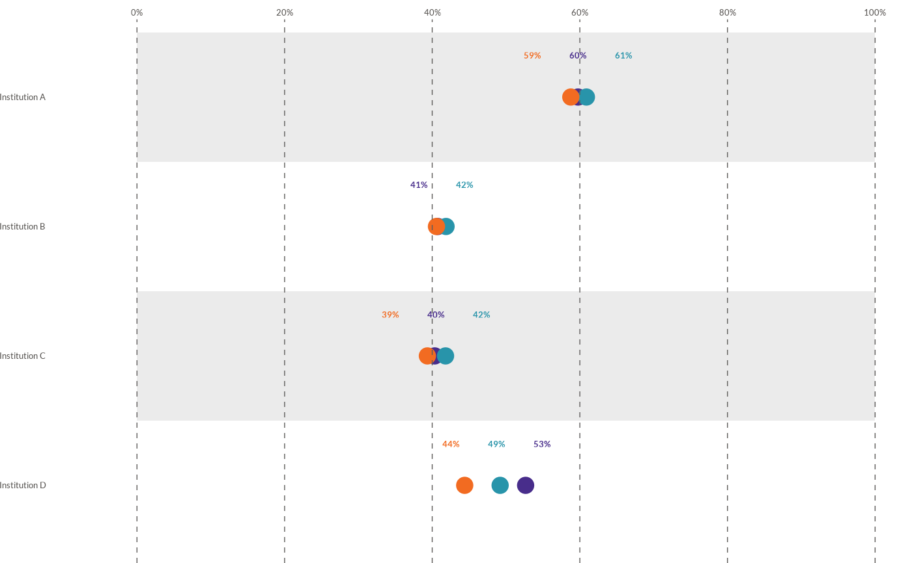

![[Experimental]](figures/lifecycle-experimental.svg)
wjp_dots() takes a data frame with long-format data and returns a ggplot
object with a dots chart following WJP style guidelines. Dots charts compare
multiple variables (rows) across groups (colors) on a horizontal 0-100
percentage scale, with an alternating strip background.
Usage
wjp_dots(
data,
target,
grouping,
colors,
cvec = NULL,
order = NULL,
diffOpac = FALSE,
opacities = NULL,
diffShp = FALSE,
shapes = NA,
draw_ci = FALSE,
sd = NULL,
sample_size = NULL,
bgcolor = "#ffffff",
labels = NULL,
show_labels = FALSE,
label_offset = 0.32,
ptheme = WJP_theme(),
show_legend = FALSE
)Arguments
- data
Data frame containing the data to plot.
- target
String. Column name of the variable that supplies the values to plot.
- grouping
String. Column name of the variable that supplies the categories (Y-axis labels).
- colors
String. Column name of the variable that supplies the color grouping. The plot shows a different color per group.
- cvec
Named vector of colors. Names should match the values of the
colorsvariable. Default isNULL(the WJP palette, seewjp_palette(), is applied).- order
String. Column name of the variable that contains the display order of categories. Default is
NULL(data order).- diffOpac
Logical. If
TRUE, different opacity levels are applied per group. Automatically enabled whenopacitiesis supplied. Default isFALSE.- opacities
Named vector of opacity levels, one per group. Default is
NULL.- diffShp
Logical. If
TRUE, different point shapes are applied per group. Automatically enabled whenshapesis supplied. Default isFALSE.- shapes
Named vector of point shapes, one per group. Default is
NA.- draw_ci
Logical. If
TRUE, draws a normal-approximation confidence interval usingsdandsample_size. Default isFALSE.- sd
String. Column name of the variable that supplies the standard deviation for the confidence intervals.
- sample_size
String. Column name of the variable that supplies the number of observations for the confidence intervals.
- bgcolor
String. Hex code of the background color for the alternating row strips. Default is
"#ffffff".- labels
String. Column name of the variable containing the value labels to display above each point. Only used when
show_labels = TRUE. Default isNULL(labels are generated automatically as rounded percentages).- show_labels
Logical. If
TRUE, draws a value label above each point. When several series in the same row share equal or near-equal values, the labels are spread horizontally withspread_labels_x()so they do not overlap, and identical labels within a row are collapsed to a single mark. Points are never moved. Default isFALSE.- label_offset
Numeric. Vertical distance (in category units) between each point and its value label. Only used when
show_labels = TRUE. Default is0.32.- ptheme
ggplot theme to apply. Default is
WJP_theme().- show_legend
Logical. If
TRUE, displays a horizontal color legend above the chart. Default isFALSE.
Details
The function expects long-format data with one row per grouping
(variable/row) and colors (group) combination. To draw a 95%
normal-approximation confidence interval around each dot, set
draw_ci = TRUE and supply per-row standard deviations (sd) and sample
sizes (sample_size). Per-group opacities (opacities) and point shapes
(shapes) can be supplied to distinguish groups beyond color.
Examples
library(dplyr)
library(tidyr)
# Always load the WJP fonts
wjp_fonts()
# Percentage of people that trust their institutions, by country
data4dots <- WJPr::gpp %>%
select(country, q1a, q1b, q1c, q1d) %>%
mutate(
across(!country, \(x) as.double(unclass(x))),
across(!country, \(x) case_when(x <= 2 ~ 1, x <= 4 ~ 0))
) %>%
group_by(country) %>%
summarise(across(everything(), \(x) mean(x, na.rm = TRUE) * 100)) %>%
pivot_longer(!country, names_to = "variable", values_to = "percentage") %>%
mutate(
institution = case_when(
variable == "q1a" ~ "Institution A",
variable == "q1b" ~ "Institution B",
variable == "q1c" ~ "Institution C",
variable == "q1d" ~ "Institution D"
)
)
wjp_dots(
data4dots,
target = "percentage",
grouping = "institution",
colors = "country",
cvec = c("Atlantis" = "#482d8b",
"Narnia" = "#2894aa",
"Neverland" = "#f26b21"),
show_legend = TRUE
)
 # With 95% confidence intervals from sd and sample size
data4dots_ci <- WJPr::gpp %>%
filter(year == 2022) %>%
mutate(
q1a = as.double(unclass(q1a)),
gend = as.double(unclass(gend)),
trust = case_when(q1a <= 2 ~ 100, q1a <= 4 ~ 0),
gender = case_when(gend == 1 ~ "Male", gend == 2 ~ "Female")
) %>%
group_by(country, gender) %>%
summarise(
mean = mean(trust, na.rm = TRUE),
sd = sd(trust, na.rm = TRUE),
n = sum(!is.na(trust)),
.groups = "drop"
)
wjp_dots(
data4dots_ci,
target = "mean",
grouping = "country",
colors = "gender",
cvec = c("Male" = "#482d8b", "Female" = "#f26b21"),
draw_ci = TRUE,
sd = "sd",
sample_size = "n"
)
# With 95% confidence intervals from sd and sample size
data4dots_ci <- WJPr::gpp %>%
filter(year == 2022) %>%
mutate(
q1a = as.double(unclass(q1a)),
gend = as.double(unclass(gend)),
trust = case_when(q1a <= 2 ~ 100, q1a <= 4 ~ 0),
gender = case_when(gend == 1 ~ "Male", gend == 2 ~ "Female")
) %>%
group_by(country, gender) %>%
summarise(
mean = mean(trust, na.rm = TRUE),
sd = sd(trust, na.rm = TRUE),
n = sum(!is.na(trust)),
.groups = "drop"
)
wjp_dots(
data4dots_ci,
target = "mean",
grouping = "country",
colors = "gender",
cvec = c("Male" = "#482d8b", "Female" = "#f26b21"),
draw_ci = TRUE,
sd = "sd",
sample_size = "n"
)
 # With value labels spread horizontally to avoid collisions
wjp_dots(
data4dots,
target = "percentage",
grouping = "institution",
colors = "country",
show_labels = TRUE
)
# With value labels spread horizontally to avoid collisions
wjp_dots(
data4dots,
target = "percentage",
grouping = "institution",
colors = "country",
show_labels = TRUE
)
